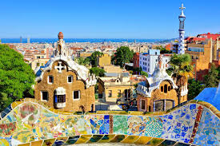
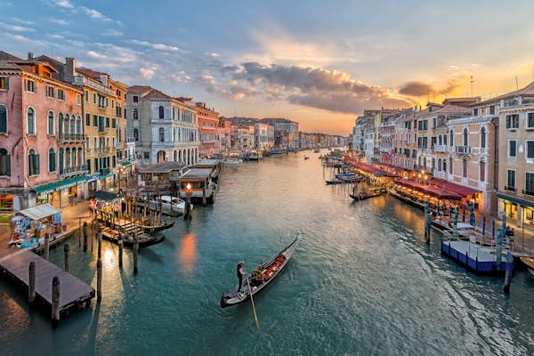

Visiting Barcelona, Monte Carlo, and Venice offers a captivating journey through some of Europe's most enchanting destinations. In Barcelona, the vibrant energy is palpable as you stroll through the whimsical architecture of Antoni Gaudí, such as the iconic Sagrada Família and Park Güell, and savor the rich flavors of Catalan cuisine. Monte Carlo exudes luxury and glamour, with its opulent casinos, stunning Mediterranean coastline, and the prestigious Grand Prix circuit, making it a playground for the elite. Meanwhile, Venice enchants with its labyrinthine canals, historic palazzos, and the timeless beauty of St. Mark's Square, where the romance of gondola rides and the allure of Venetian masks transport you to another era. Each city, with its unique charm and character, promises an unforgettable experience.
Barcelona
Barcelona is a vibrant city full of stunning architecture by Antoni Gaudí, like the Sagrada Família and Park Güell. Explore the lively La Rambla, historic Gothic Quarter, and savor delicious Catalan cuisine.
Venice
Venice enchants with its canals, gondola rides, and historic charm. Highlights include St. Mark's Basilica, the Doge's Palace, and the lively Piazza San Marco, making it a timeless, romantic destination.
Monte Carlo
Monte Carlo exudes luxury, known for its lavish casinos, the Monaco Grand Prix, and beautiful Mediterranean coastline. Enjoy high-end shopping, fine dining, and breathtaking views.